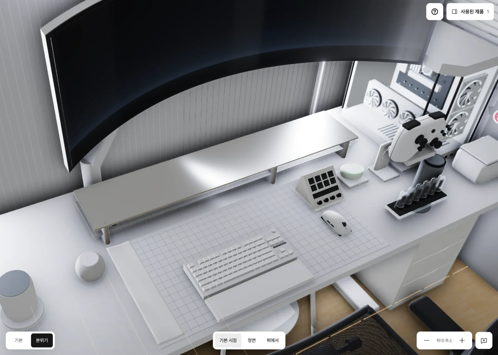
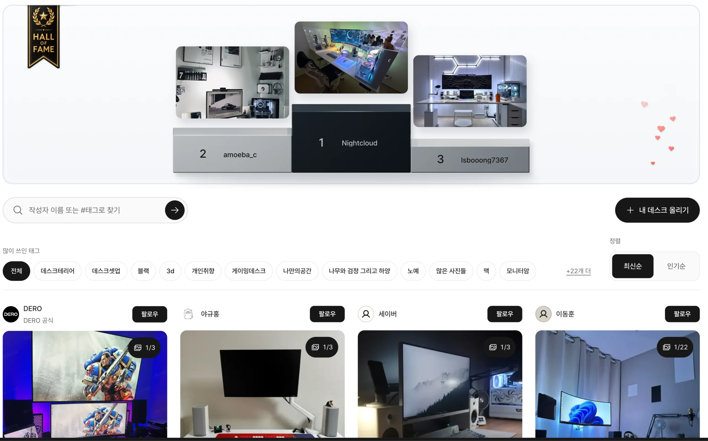
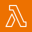
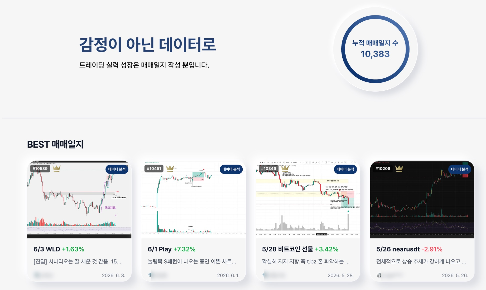

저는 최신 기술 트렌드에는 얼리어답터, 제가 만든 결과물에는 가장 깐깐한 리뷰어입니다. 아침마다 AI 컨퍼런스와 소셜 미디어에서 찾은 AI 트렌드를 토대로 내 상황에 최적으로 어떻게 적용할지 생각하고, 체감과 측정한 결과를 확인하여 검증합니다. 트렌드를 좇는 만큼 CS 기본기도 놓치지 않고, 왜 그렇게 동작하는지 이해한 뒤에 씁니다.
실제 제품 치수로 미리 맞춰 보는 데스크테리어 3D 시뮬레이터
실제 제품 치수(mm)와 VESA 규격, 허용 하중을 바탕으로 책상과 모니터암, 소품을 3D로 배치해 보고, 사기 전에 크기와 호환성, 견적을 확인하는 웹 서비스입니다.



LambdaDERO 운영 인프라 (2026.11). 노드 러너가 이미지를 빌드하고, nginx 업스트림을 바꿔 무중단 배포
| PR이 늘어도 지킨 품질 (팀 전체) | 머지 PR | 되돌림 | 운영 릴리스 | 검사 수 |
|---|---|---|---|---|
| 2026.07 | 178 | 0.22% | – | 29 |
| 2026.10 | 892 | 0.61% | 38회 | 70 |
| 2026.11 | 784 | 0.2% | 62회 | 88 |
2026-11-25에 eng-metrics.py로 측정. 표에 없는 8월은 364건에 1.04%, 9월은 38건에 2.5%. 11월 릴리스 간격 중앙값은 3.1시간
| 계층 | 대상 | 정책 | 운영 적중률 |
|---|---|---|---|
| 이미지 | 제품, 셋업 사진 | 버전이 든 주소로 1년 캐시, 첫 조회가 몰려도 원본에는 1번 | 92% |
| 정적 파일 | JS, CSS, 에셋 | 버전 이름은 1년, 나머지는 1일 | 91~98.7% |
| 페이지 | 홈, 목록, 상세 HTML | 10초 캐시, 만료 뒤에는 옛 응답을 주고 뒤에서 갱신 | 홈 96% |
적중률은 운영 nginx 로그(2026.11.14~16)로 집계
| 운영 모바일 LCP (Lighthouse) | 제품 목록 | 제품 상세 | 홈 |
|---|---|---|---|
| 반영 전 | 13.2초 | 6.3초 | 5.9초 |
| 반영 후 | 4.1초 | 2.1초 | 2.4초 |
반영 전 3회, 반영 후 5회 측정의 중앙값 (2026.11.13)
LCP는 Lighthouse 실험실 값(2026.11.13). 노출은 Search Console 전체에서 검색어 dero를 뺀 값(2026.11.26 조회)
국내 개인 트레이더에게 필요한 금융 뉴스를 골라 주는 AI 플랫폼
금융 뉴스를 모아 뜻으로 검색할 수 있게 색인하고, 시장 Q&A, 알림, 자연어 종목 검색, 개장 전 브리핑으로 보여 주는 플랫폼입니다. 저는 수집, 인덱싱, 정합성, 의미 검색, Q&A RAG, 데이터 모델을 맡았고, 배치와 KRX 연동, 자연어 종목 검색은 팀원이 구현했습니다.
파란 선이 제가 만든 인덱싱 경로. 원본을 먼저 쓰고, relay가 그 행의 상태를 보고 두 검색 저장소를 채움
원본은 PostgreSQL에 먼저 쓰고, relay가 그 행의 상태 칸을 대기열 삼아 두 검색 저장소를 채움
(1)의 알림 기준값. 0.05~0.95를 0.01 간격으로 훑어 고름. 0.44에서 정밀도 0.973, 재현율 1.000, F1 0.986 (기준값을 고른 같은 96쌍에서 잰 값)
답은 "관련 근거 기사를 찾지 못했습니다"인데 화면에는 출처가 뜨던 Q&A ↗
검색이 유사도 기준 없이 늘 5건을 돌려줘 엉뚱한 기사가 출처로 떴음. 검색 뒤 두 번, 답변 뒤 한 번 걸러 답과 출처를 맞춤.
전달을 확인하기 전에 "보냈음"으로 기록하던 크롤러 ↗
전송이 실패해도 그 기사가 다시 시도되지 않는 순서였음(계획 검토에서 발견). 보내고, 확인하고, 기록하는 순서로 바로잡음.
LLM 공급자를 바꾸려면 여러 파일을 고쳐야 했던 문제 ↗
클라이언트를 만드는 곳이 5곳이던 것을 한 곳으로 모아, 공급자는 환경변수로 바꿈. 모델마다 다른 출력은 따로 고쳐야 했음.
트레이딩 교육과 매매일지 피드백 플랫폼

서비스 메인 화면. 매매일지가 10,383건 쌓여 있음 (이용자 닉네임은 가림)
단일 VPC 안의 운영 구성. 초록 점선은 CodeDeploy 블루그린 배포 경로
AI 에이전트가 오류 접수부터 머지까지 맡는 루프를 팀에 들였고, 직접 쓴 WebGPU 렌더러로 첫 화면을 15.2초에서 0.71초로 줄였습니다.
직접 설계한 1세대 개발 절차도 intent 209개 중 181개가 open으로 남은 걸 보고 접었고, 알림 기준값도 감이 아니라 라벨 데이터로 정했습니다.
운영 중인 서비스의 결제와 인프라를 혼자 구축했고, 팀장으로서 백엔드와 ERD를 맡았습니다. 그래서 에이전트가 짠 코드에서 어디가 위험한지 압니다.
빨리 만들어도 무너지지 않는 구조를 계속 만들겠습니다.